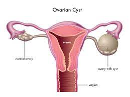

Ovarian cysts

SYMPTOMS:
Often times, ovarian cysts do not cause any symptoms. However, symptoms can appear as the cyst grows. Symptoms may include:
- abdominal bloating or swelling
-
painful bowel movements
-
pelvic pain before or during the menstrual cycle
-
painful intercourse
-
pain in the lower back or thighs
-
breast tenderness
-
nausea and vomiting
DIAGNOSIS
- CT scan: a body imaging device used to create cross-sectional images of internal organs
-
MRI: a test that uses magnetic fields to produce in-depth images of internal organs
-
ultrasound device: an imaging device used to visualize the ovary
TREATMENT
Your doctor may recommend treatment to shrink or remove the cyst if it doesn’t go away on its own or if it grows larger.
-
Birth control pills:-
If you have recurrent ovarian cysts, your doctor can prescribe oral contraceptives to stop ovulation and prevent the development of new cysts. Oral contraceptives can also reduce your risk of ovarian cancer. The risk of ovarian cancer is higher in postmenopausal women.
-
Laparoscopy:-
If your cyst is small and results from an imaging test to rule out cancer, your doctor can perform a laparoscopy to surgically remove the cyst. The procedure involves your doctor making a tiny incision near your navel and then inserting a small instrument into your abdomen to remove the cyst.
-
Laparotomy:-
If you have a large cyst, your doctor can surgically remove the cyst through a large incision in your abdomen. They’ll conduct an immediate biopsy, and if they determine that the cyst is cancerous, they may perform a hysterectomy to remove your ovaries and uterus.